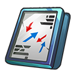
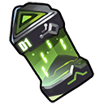
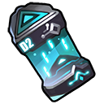
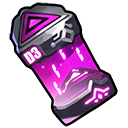
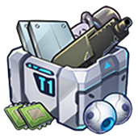
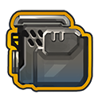
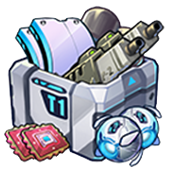
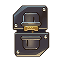
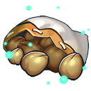

前言
1，参考源：日本WIKI
2，如果觉得好用就给个赞吧，赞又不要钱0.0，不定时更新。
2，如果觉得好用就给个赞吧，赞又不要钱0.0，不定时更新。
活动描述
2021年06月30日（星期三）维护后 至 2021年09月01日（星期三）维护前
作戦展開中にグアムの港を占領したオルカ号。潜水艦のオーバーホール作業が実施される間、隊員たちは残りの地域を掌握したり、休息を取るなど各自それぞれの時間を過ごしていた。
そんな彼女たちの前に現われた身元不明のバイオロイド。彼女は自分のことをバイオロイド救護活動に携わる共同体の一員だと紹介し、彼女の居場所である「妖精の村」へと案内してくれる。
彼女のリーダーと対面しようとした瞬間に発生した爆発、そして「妖精の村」に抵抗する白い翼を持つバイオロイド。怪しい雰囲気を漂わすロボットと司令官に向けられた陰謀の片りん。
時の流れから取り残された熱帯の島で繰り広げられる物語、6月30日にその真相が明らかに！
- 妖精村舞台可以像里约波罗斯的遗产一样通过探索活动关卡得到货物追踪ID芯片。
- またデイリークエスト・ウィークリークエスト報酬や交換でも得る事が出来ます。
- ID芯片用于轮盘赌（双六），每转一次就可以得到1～6个残骸和根据残骸数前进的棋子（A～F）的道具。
- 每集20个残骸就登上舞台，每次到达舞台都能从部件→营养→电力的顺序拿到资源1000，在一定的舞台上还能得到特别报酬。
- ルーレットは稀にチップの消費なしで回せる事があります。
- 各个阶段报酬:

- 特定阶段报酬
10 滅亡前の戦闘記録x1 25 滅亡前の戦術教本x1 50 約束の花束x10 75 クリチップβx1 100 特殊代替コアx1 125 合成樹脂・塗料・鉄材x1800 150 誓約指輪x1
| NO | 任务名称 | 细节 | 部分 | 营养 | 电力 | 物品 |
|---|---|---|---|---|---|---|
| 001 | 区域巡逻 | 通关活动关卡10次 | 375 | 375 | 375 | 通用模块 x 30 豪华模块 x 3 维修纳米机 x 1 货物追踪 ID 芯片 x 3 |
| 002 | 生长抑制 | 消灭50只铁虫 | 150 | 0 | 0 | AI 核心 x 1 修复纳米机器 x 1 货物追踪 ID 芯片 x 3 |
| 003 | 确保新的力量 | 制造3 个生物体 | 200 | 400 | 250 | 基因种子 x 2 快速完成电路 x 1 货物追踪 ID 芯片 x 3 |
| 004 | 新设备供应 | 制造5个装备 | 50 | 0 | 0 | 作战装备核心 x 3 货物追踪 ID 芯片 x 3 |
| 005 | 寻找消失的成员 | 获得 10 个生物体* 1 | 0 | 100 | 0 | 基因种子 x 1 修复纳米机器 x 1 货物追踪 ID 芯片 x 3 |
| 006 | 保障供应 | 完成资源搜索10次 | 100 | 100 | 200 | 基因种子 x 1 快速完成电路 x 1 货物追踪 ID 芯片 x 3 |
| 007 | 战斗员检查 | 强化战士3倍 | 0 | 0 | 50 | 快速完成电路 x 1 重型攻击机模块 MP x 1 重型保护模块 MP x 1 货物跟踪 ID 芯片 x 3 |
| 008 | 设备检查 | 强化装备3次 | 200 | 200 | 200 | 装备改良芯片组 MP x 3 作战装备核心 x 3 货物追踪 ID 芯片 x 3 |
| 009 | 不断的训练 | 清除每日训练一次 | 0 | 0 | 0 | 战斗日记 x 1 货物追踪 ID 芯片 x 3 |
| 从以下列表中随机出现一个 | ||||||
| 010 | 潜在风险消除 | 消灭3个boss铁虫 | 150 | 150 | 150 | 豪华模块 x 3 原型零件 x 3 维修纳米机器 x 1 货物追踪 ID 芯片 x 3 |
| 011 | 晚餐是鸡肉吗？ | 摧毁Nighttic 系列的30 只铁虫 | 100 | 0 | 0 | 量产型零件 x 30 货物追踪 ID 芯片 x 3 |
| 012 | 有害机械 | 摧毁 25 只穿着轻便的铁甲虫 | 0 | 150 | 0 | 武装零件 x 5 重型武装零件 x 1 货物追踪 ID 芯片 x 3 |
| 013 | 废铁收集 | 摧毁 10 只重武装的铁甲虫 | 150 | 0 | 0 | 合金装甲板 x 5 超合金装甲板 x 1 货物追踪 ID 芯片 x 3 |
| 014 | 烦人的苍蝇 | 摧毁 10 个移动铁虫 | 0 | 0 | 150 | 助推器部件 x 5 高输出助推器部件 x 1 货物跟踪 ID 芯片 x 3 |
| 015 | 仓库安排 | 拆卸设备3次 | 100 | 0 | 100 | 作战装备核心 x 2 货物追踪 ID 芯片 x 3 |
| 关卡 | 时间 | 必要等级 | 必要人数 | 部品 | 部品/每分 | 营养 | 营养/每分 | 电力 | 电力/每分 | 总资源 | 总资源/分 | ID卡/个 |
|---|---|---|---|---|---|---|---|---|---|---|---|---|
| Ev-6 | 01:00:00 | 30 | 3 | 200 | 3.3 | 135 | 2.3 | 50 | 0.8 | 385 | 6.4 | ×4 |
| Ev-3 | 01:30:00 | 20 | 3 | 200 | 2.2 | 240 | 2.7 | 60 | 0.7 | 500 | 5.6 | ×6 |
| Ev-4 | 02:00:00 | 20 | 4 | 200 | 1.7 | 200 | 1.7 | 200 | 1.7 | 600 | 5.1 | ×7 |
| Ev-8 | 12:00:00 | 40 | 5 | 0 | 0 | 1800 | 2.5 | 1200 | 1.7 | 3000 | 4.2 | ×38 |
| Ev-2 | 00:30:00 | 10 | 3 | 0 | 0 | 0 | 0 | 125 | 4.2 | 125 | 4.2 | ×2 |
| Ev-1 | 00:15:00 | 10 | 2 | 15 | 1 | 40 | 2.8 | 0 | 0 | 55 | 3.8 | ×1 |
| Ev-5 | 08:00:00 | 20 | 5 | 150 | 0.3 | 1250 | 2.6 | 250 | 0.5 | 1650 | 3.4 | ×27 |
| Ev-7 | 02:45:00 | 30 | 4 | 105 | 0.6 | 265 | 1.6 | 110 | 0.7 | 480 | 2.9 | ×10 |
地图信息表
全图参考攻略


|
配置
|
解说
| ||
| 7 | 8 | 1,即使是萌新也是比较容易实现，需要晋升女警的编排 2,Poi的话效率比较高，攻击机用其他角色也可以(比如去ev8打捞P22) 3,女警满链接全防御加点，防御类型的装备（扛得住的话，链接奖励可以选减消耗） 4,セーフティの隣以外の空いている場所にひよこを置く事も可能(挑発持ちは不可) 5,不能稳定周回的情况，建议多强化攻击机的攻击类装备和女警的防御装备 | |
| 4 | 5 | 6 | |
| 1 |  | 3 | |

交换所
|
NO
|
名称
|
在库
|
兑换
|
优先度
|
说明
|
| 雪羽 | 5 | × 50 | 中 | ||
| 阿撒谢尔 | 1 | × 100 | |||
| 输出增强电路测试版 | 1 | × 50 | 高 | ||
| 电路耐力增强测试版 | 1 | × 50 | 高 | ||
| 战斗日记 | 100 | × 50 | |||
|  | 战斗记录 | 20 | × 50 | ||
| 毁灭前的战绩 | 1 | 25 | |||
| 培训教材 | 100 | × 50 | |||
| 实用教科书 | 20 | × 50 | |||
| 破坏前的战术教科书 | 1 | 25 | |||
|  | 粉尘（绿） | 250 | × 30 | 中 | B级和A级战斗人员的晋升（升级）所需。 我需要很多，所以如果我负担得起，我想更换它们。 |
|  | 粉尘（蓝） | 100 | × 150 | 中 | A级和S级战斗人员的晋升（升级）所需。 我需要很多，所以如果我负担得起，我想更换它们。 |
|  | 粉尘（紫） | 25 | × 50 | 中 | S级战斗人员的晋升（升级）所需。 功能增强（最高级）每天一次训练只能获得 1次左右。当 设施研究没有进展并且无法进行最高级的培训时，它尤其有价值。 |
| 250 粉尘（绿） | 250 | × 70 | 中 | ||
| 100 粉尘（蓝） | 100 | × 100 | 中 | ||
| 25 粉尘（紫） | 25 | × 120 | 中 | ||
|  | 一盒20个通用机器人零件 | 100 | × 150 | ||
| 通用模块 | 99999 | × 5 | |||
| 豪华模块 | 2000 | × 100 | |||
| 特殊模块 | 100 | × 500 | 设施研究所需。 如有必要，在交换高优先级物品后。 | ||
| 装备改良芯片EX | 1000 | × 70 | |||
| 装备改良芯片组SP | 1000 | 40 | |||
| 每个模块EX用于战斗合成 | 350 | × 50 | |||
| 快速完成电路 | 50 | × 250 | |||
|  | 作战装备核心 | 50 | × 250 | ||
| 基因种子 | 30 | × 500 | |||
|  | 一套 20 个新机器人零件 | 25 | × 13 | ||
| 替代核心 | 5 | × 30 | |||
| 特殊替代核心 | 1 | × 150 | 高 | 稀有度高，可用性高 | |
| 齿轮 500 | 100 | × 250 | |||
| 营养 500 | |||||
| 电力 500 | |||||
| 自制蛋糕 x 3 | 10 | × 100 | |||
| 约定的花束 | 5 | 25 | 中~高 | ||
| 合成树脂900 | 1 | × 750 | 如果您专注于基础设施，则为中等优先级 | ||
| 油漆900 | |||||
| 铁料900 | |||||
| 战斗模块初始化器 | 5 | × 30 | |||
|  | 取消链接器 | 5 | × 30 | ||
| 世界树枝 | 99999 | × 10 | |||
| 世界树叶 | 99999 | × 10 | |||
|  | 世界树种子袋 | 99999 | × 1 | 10 个世界树种子 | |
| 一堆世界树枝 | 99999 | × 1 | 10 个世界树枝条 |
如果您喜欢我的帖子，別忘了返回K站给我个赞吧~非常感谢！